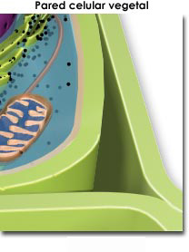

Una de las características mas sobresalientes de las células vegetales es la presencia de una pared celular, la cual tiene diversas funciones. La pared celular protege los contenidos de la célula, da rigidez a la estructura celular, provee un medio poroso para la circulación y distribución de agua, minerales, y otras pequeñas molélulas nutrientes; además de contener moléculas especializadas que regulan el crecimiento de la planta y la protegen de las enfermedades.
La substancia que constituye la pared celular de las plantas es un carbohidrato: la celulosa, formado por miles de moléculas de glucosa.